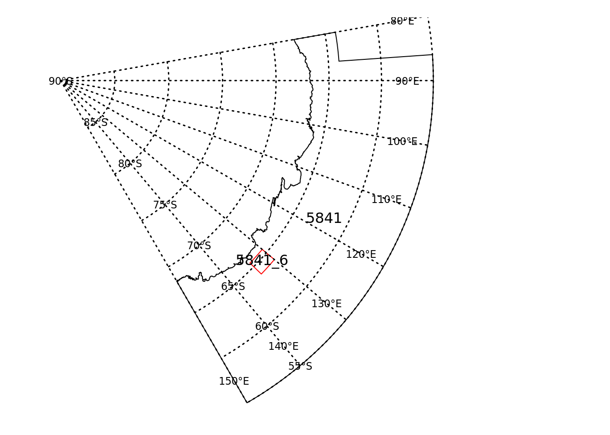
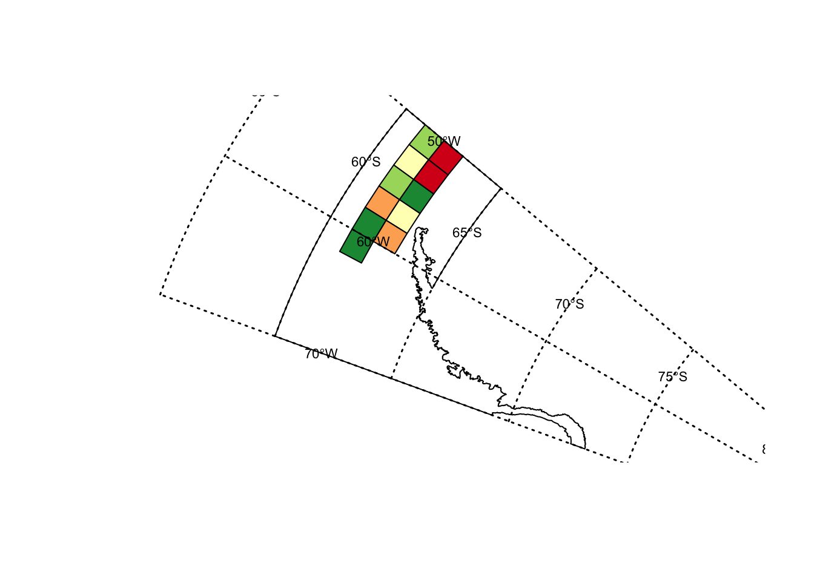

This vignette describes the R package “CCAMLRGIS”. The CCAMLRGIS package was developed to create new georeferenced data in the CCAMLR Convention Area for visualisation (i.e. mapping) and/or analyses and for reading existing georeferenced data that is displayed on the CCAMLR online GIS (https://gis.ccamlr.org/) directly from the webpoint end service into R. The package has a number of create functions for creating polygons, polygon grids, lines or points and a series of load functions for reading existing georeferenced data that has been agreed by the Commission and is documented in CCAMLR’s Conservation Measures or in Scientific Committe reports.
The main purpose of this package is to: (1) facilitate the use of CCAMLR’s spatial data by members and the wider scientific R user community and; (2) To enure the spatial data presented at CCAMLR’s Working Group meetings and the Scientific committe conforms with the projection and processing choices that have been agreed by CCAMLR (or something along these lines)
To understand what is covered in this vignette, you must understand the basics of the R language. There are a number of on-line and other resources that can help you to get acquainted with it. The CCAMLRGIS package does not operate in isolation. There are a number of R package that the CCAMLRGIS package requires and other R packages that it compliments. Package requirements can be viewed under Imports in the DESCRIPTION file and in individual functions.
One complementary package is “graticule”. Graticules are the lines of constant longitude and latitude shown on a projected map, and defining and drawing these lines is not easy to automate. The graticule package provides the tools to create and draw these lines by explicit specification by the user. The relevant functions from the graticule package will be included in examples provided below.
To install the CCAMLRGIS from github you will firstly need to install devtools (i.e. install.packages(“devtools”)) and then use the following command:
devtools::install_github("lucymerobinson/CCAMLRGIS",build_vignettes=TRUE)Polygon data often needs to be created when new scientific research areas and/or management areas are being proposed. The create_Polys function has been developed to create polygons that conform to CCAMLR’s standards/specifications that can be used in analyses or to generate maps in R.
See ?create_Polys for function input specifications
library(CCAMLRGIS)
# Create research block polygon
# specify the name of the Research block
Name <-"5841_6"
# specify the Latitude coordinates in decimal degrees
Lats <- c(-64.0, -65.5, -65.5,-64.0)
# specify the Longitude coordinates in decimal degrees
Lons <- c(130, 130, 134, 134)
# bind information together into a dataframe for input into the create_Polys function see ?create_Polys
Coords <- data.frame(Name=rep(Name,length(Lons)),Lats=Lats,Lons=Lons)
# create polygon of proposed Research area to use in further Analyses
New_RB <-create_Polys(Coords)The SpatialPolygonDataFrame “New_RB”" can be created for further use in R (as per the above example) because the default parameter option for OutputFormat=“ROBJECT”. You can also output as an ESRI Shapefile for use in other programs by specifying OutputFormat=“SHAPEFILE” and OutputName=“RB_5841_6”
CCAMLR’s reference data include management areas, defined in Conservation Measures and/or Scientific Committee reports (e.g. ASD’s, SSRU’s, etc). The text and/or geographical coordinates that are used to create polygons that define the reference area boundaries are stores in the CCAMLR’s central database in SQL Server Spatial. These data, that are displayed as layers on the online GIS, are also stored in GeoJSON format, in an online geoserver repository, that allows them to be loaded directly into R.
# load ASDs from the online GIS - you will need to be online for this to work see
?load_ASDs
ASDs <- load_ASDs("GEOJSON")# index ASD in the area of interest - e.g. 58.4.1
ASD_5841 <- ASDs[ASDs$GAR_Short_Label%in%"5841",]See ?graticule for function input specifications
# add graticules and store locations of labels
library(graticule)## Loading required package: sp#> Loading required package: sp
# create graticules for plotting below
meridians <- seq(80,150, by = 10)
parallels <- seq(-90, -55, by = 5)
mlim <- c(min(meridians), max(meridians))
plim <- c(min(parallels), max(parallels))
grat <- graticule(lons = meridians, lats = parallels, xlim = mlim, ylim = plim, proj = raster::projection(New_RB))
labs <- graticule_labels(meridians, parallels, xline = 140, yline = -57.5, proj = raster::projection(New_RB))par(mar=c(1,1,1,1))
raster::plot(ASD_5841)
text(sp::coordinates(ASD_5841), labels=as.character(ASD_5841$GAR_Short_Label),cex=1,col="black")
raster::plot(New_RB,add=TRUE,border="red")
text(sp::coordinates(New_RB), labels=as.character(New_RB$name),cex=1,col="black")
# add graticules to plot
raster::plot(grat, add = TRUE, lty = 3,lwd=1.5)
text(labs, lab = parse(text= labs$lab), col= "black", cex = 0.7)
Polygon grids are useful for displaying catch quantities at a resolution that can be specified by the user. The create_PolysGrids function has been developed to create polygon grids to display variation in quantity of target species catch.
See ?create_PolysGrids for function input specifications
library(CCAMLRGIS)
# Create example catch data with Longitude and Latitude
# specify the Latitude coordinates in decimal degrees
Lats <- rnorm(1000,mean=-62,sd=0.25)
# specify the Longitude coordinates in decimal degrees
Lons <-sample(seq(-60,-50,0.01),1000,replace=TRUE)
Catch <- sample(100:1000,length(Lons),replace = TRUE)
# bind information together into a dataframe for input into the create_Polys function see ?create_Polys
Catch_data <- data.frame(Lats=Lats,Lons=Lons,Catch=Catch)
# create polygon of proposed Research area to use in further Analyses
New_Grid <-create_PolyGrids(Catch_data,dlon=2,dlat=1,Type = "NUM")The SpatialPolygonDataFrame “New_Grid”" can be created for further use in R (as per the above example) because the default parameter option for OutputFormat=“ROBJECT”. You can also output as an ESRI Shapefile for use in other programs by specifying OutputFormat=“SHAPEFILE” and OutputName=“KrillCatch_Grid”
The ClassInt package will find appropriate intervals for plotting
The RColorBrewer package provides a variety of color ramps for plotting
# add graticules and store locations of labels
# install.packages(c("classInt","RColorBrewer"))
library(classInt)
library(RColorBrewer)# specify lables for graticules
meridians <- seq(-70,-50, by = 10)
parallels <- seq(-90, -55, by = 5)
mlim <- c(min(meridians), max(meridians))
plim <- c(min(parallels), max(parallels))
grat <- graticule(lons = meridians, lats = parallels, xlim = mlim, ylim = plim, proj = raster::projection(New_RB))
labs <- graticule_labels(meridians, parallels, xline = -55, yline = -62, proj = raster::projection(New_RB))
#specify colour ramp
cols <- brewer.pal(n = 5, name = "RdYlGn")
breaks<-classIntervals(New_Grid$Sum,5)
# add a very small value to the top breakpoint, and subtract from the bottom for symmetry
br <- breaks$brks
offs <- 0.0000001
br[1] <- br[1] - offs
br[length(br)] <- br[length(br)] + offs
plot(ASDs[ASDs$GAR_Short_Label%in%"481",])
plot(New_Grid, col=rev(cols)[cut(New_Grid$Sum, br)],add=TRUE)
# add graticules to plot
raster::plot(grat, add = TRUE, lty = 3,lwd=1.5)
text(labs, lab = parse(text= labs$lab), col= "black", cex = 0.7)